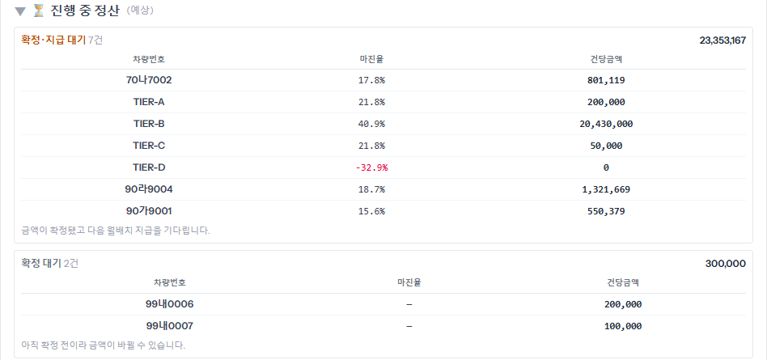
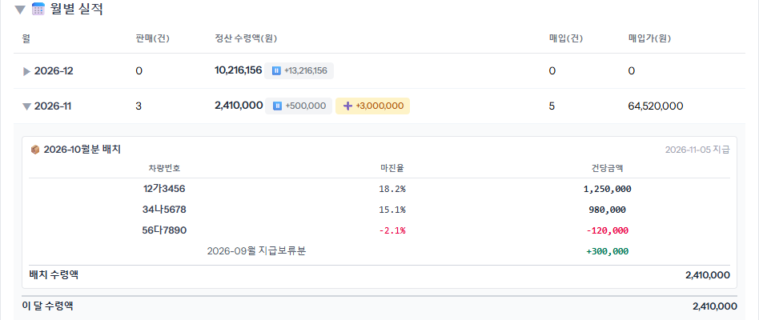
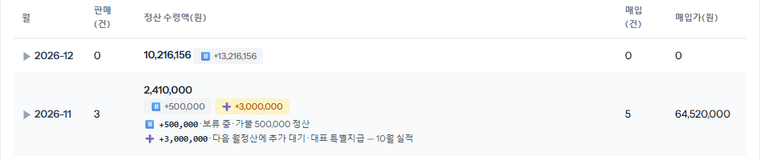
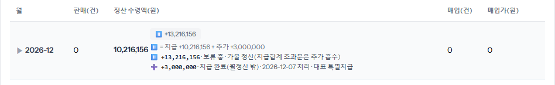
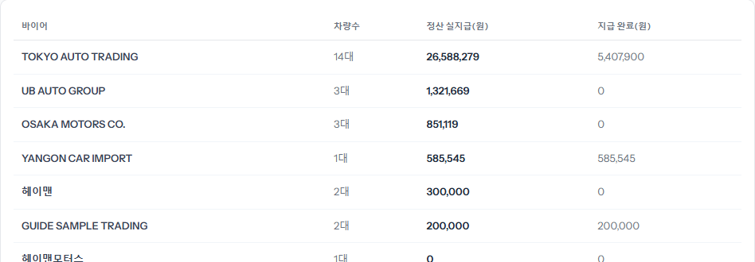

내 정산(차마다 받는 돈)은 「내 정산·미수(포털)」 [요약] 탭 아래쪽에 있습니다. 위는 아직 안 받은 것(진행 중 정산), 아래는 받은 것(월별 실적)입니다. 숫자는 ERP 정산 화면 그대로입니다. 틀려 보이면 ERP 정산 담당에게 물어보세요.
차마다 「마진율」과 「건당금액」(내가 받을 돈)이 나오고, 칸 오른쪽 위 숫자가 그 상태의 합계입니다. 상태가 다른 금액은 서로 더하지 않습니다.

「정산 수령액」이 그달 실제로 받은 돈입니다. ▶ 가 있는 달을 누르면 지급 묶음(「OO월분 배치」)마다 차량·마진율·건당금액과 조정 줄(사유 포함), 「배치 수령액」이 나오고, 맨 아래 「이 달 수령액」이 그달 합계입니다. 묶음에 안 들어간 지급도 같은 자리에 함께 나옵니다.

누르면 줄마다 금액·상태·사유·처리일이 펼쳐집니다(다시 누르면 접힘).
뱃지 금액은 「정산 수령액」에 더해져 있지 않습니다 — 따로 보는 숫자입니다.


바이어마다 차량 수, 「정산 실지급」(받을 돈 합계), 「지급 완료」(이미 받은 돈)가 나옵니다. 어느 바이어 차에서 정산이 덜 들어왔는지 볼 때 씁니다.
